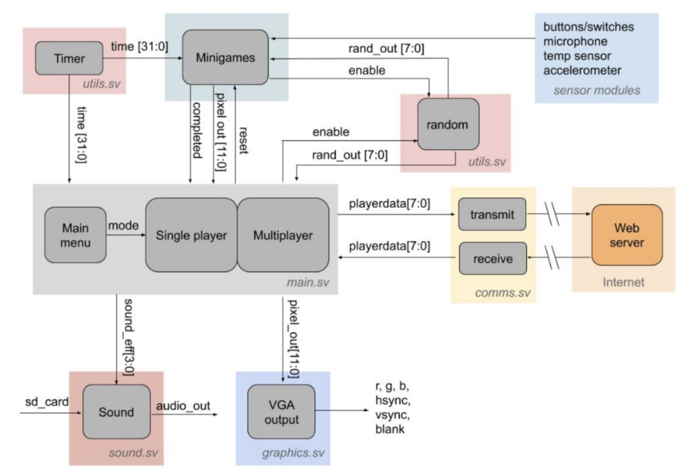
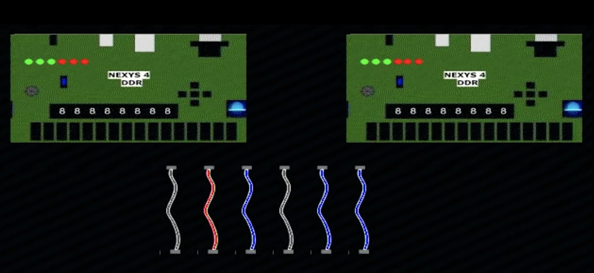

Tasked to design and implement a digital project in areas such as games, music, digital filters, wireless communications, video, and graphics.
I worked with teammates Devin Murphy and Willie Zhu to implement an FPGA-based multiplayer bomb defusing game (Kaboom!) inspired by Keep Talking and Nobody Explodes.
I implemented 3 of our bomb defusing minigames and helped design and implement the graphics and instuction/user manual.
skills used/developed
- digital logic
- finite-state machines
- FPGAs
- timing and synchronization
- signal processing
- SystemVerilog
Kaboom consists of a series of back-to-back minigames that you must complete to defuse the bomb before time runs out. We aimed to utilize as much built-in FPGA
functionality as we could when designing these minigames, utilizing the FPGA's microphone, temperature sensor, and accelerometer. Our system also utilized a
speaker and VGA to display our game audio and custom graphics.
Block diagram of our system:

my implemented minigames
1. Wire Cutting Module
This module takes in 6 3 bit numbers from the randomizer, one for the color of each of the 6
wires. These three bit numbers are mapped to colors via case statements. The instructions to
disarm this module are based on the first wire color and the number of wires of that color. To
count the number of wires that were the first color, I wrote a short module that takes in two
input colors and returns 1 if they are the same, and 0 otherwise. I then put all the combinations
of the first wire and others through this module ((1,2), (1,3), (1,4), (1,5), (1,6)) and added the
results + 1 (to account for the first wire). I then used an always_comb to assign the wire that
the user needed to cut for each first wire color / number of wires of that color combination. If
the defuser cuts the correct wire (flips the correct switch), then an always_ff block will signal
that the module was completed, while if the user cuts a wrong wire, the always_ff will signal
that the module was failed. If no wires are cut, the module remains in the playable state. The graphics for
this module were based on one wire image, where the wire itself was white. The wire was intentionally made white
so that the module that stored the wire image could take in a wire input color, then check for pixels in the image
that were white and replace them with the needed color in real time. This made it easy to generate wires of multiple random
colors without taking up too much BRAM.

2. Uncovered Button Module
This module takes in one 2 bit number, and two 1 bit numbers from the randomizer. The two
bit number assigns the button to a color using a case statement, and one of the 1 bit numbers
is used to assign a color strip under the button to one of two colors. The last 1 bit random
number is used to determine whether the button will be blank or have text (say “Hold”). This
module also takes in the minutes, tens, and ones position of the timer. The instructions to
disarm this module are based on all of the randomized inputs. Depending on the button color,
strip color, and whether the button has text the user must press the pushed_button when there
is a certain number in the timer and release when there is a different number in the timer.
A few always_ff blocks were used to keep track of the times the user pushed/released the
button. Upon reset, a previous_button logic was set to the input pushed_button value. A
counter was used, and once it got to 1_000_000 clock cycles, I checked to see if the
previous_button was 0 and the current pushed_button was 1. If this was true, I stored the
inputted timer’s minutes, tens, and ones as the pushed minutes, tens, ones. I also did this in
reverse (checking if the button was previously 1 and now 0 after 1_000_000 clock cycles) to
store the timer’s values when the button was released. The count to one million was added as
an additional debounce precaution and to ensure that I was actually seeing a transition from
not pushed/pushed/released. There was a different push/release button time
condition for each color/strip/text combination. If the Defuser pushed and released the button
at the correct times according to the rules, then the always_ff will signal that the module was
completed. If the user does not push or release the button at the correct time, then a failed
signal will be raised.
3. Covered Button/Microphone Module
The module begins by displaying a glass covered button on the screen and a rectangular color
strip to the right. The user must hold a correct note long enough to shatter the glass and push the
button. The graphics also update when the note is held long enough, showing the covering cracked, and
then gone (all these images created in inkscape and stored in BRAM via COEs). Once the cover is gone, the user
can press the corresponding button on the FPGA to complete the module. The audio was put through an analog-digital
converter IP (ADC). This measures the microphone output voltage and converts it to a digital signal. This
data was then put through a Fast Fourier Transform IP (FFT) to convert the time-domain signal
into its frequency domain representation so that we could compare the frequency we are receiving most of to the
needed input frequency to complete the module.
Below you can see the final report for this project!